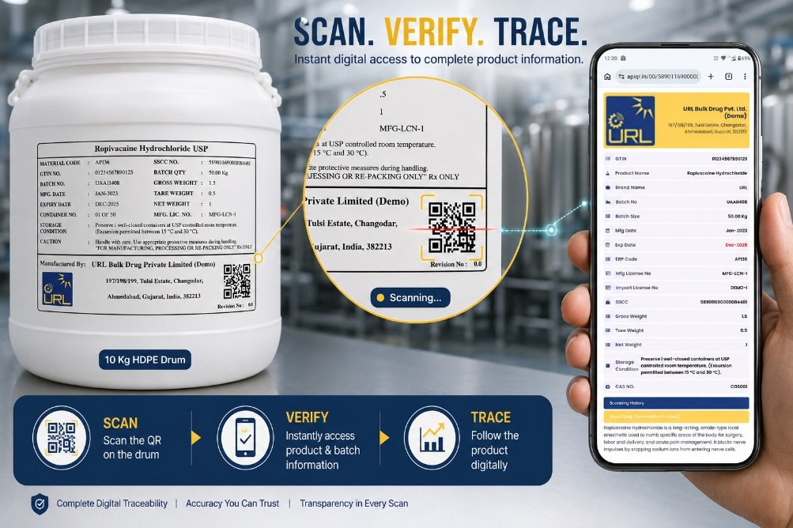

Product & batch management
Manage product masters, packaging information and batch data from one centralized system.
APIQR is cloud-based API serialization software that turns your product and batch data into QR-code labels designed around G.S.R. 20(E) — including the 11 minimum particulars, SSCC, audit logs and customizable label templates, all in one connected workflow.
No new servers required No packing-line modification required 30-minute demo — no obligation

Scan · Verify · Trace All 11 particulars present
APIQR — developed by URL Aseptic Automation Inc.
Pharmaceutical serialization expert

The APIQR platform
APIQR brings the essential activities of API serialization into one connected platform.
Designed for manufacturers and organizations handling Active Pharmaceutical Ingredients (APIs) and Bulk Drugs, APIQR is a cloud-based platform that supports product and batch management, serialization, QR-code labelling, SSCC generation, approvals, customizable label templates, printing, traceability and audit records.
G.S.R. 20(E) defines the regulatory requirements. APIQR supports the wider operational workflow needed to create, manage and control serialized API labels.
One connected platform
Manage product masters, packaging information and batch data from one centralized system.
Generate QR code labels with Serial Shipping Container Codes and other details for serialized API containers.
Create and manage customized label template layouts based on product, customer and packaging requirements.
Review, approve, reject or cancel batches through controlled user workflows.
Manage label reprints with authorization and an associated record, preventing unauthorised duplication.
Maintain product, batch, user and printing records with audit logs and downloadable reports.
How APIQR works
Built by URL Aseptic Automation Inc.
APIQR is developed by URL Aseptic Automation Inc., combining expertise in pharmaceutical serialization, track & trace, product authentication and packaging automation with integrated pharmaceutical machinery, software and end-to-end solutions.
The broader experience behind APIQR helps bring software, serialization and pharmaceutical packaging workflows together.
About URL Aseptic AutomationSee APIQR in action
See APIQR with your own product and batch data.
Global serialization experience
Experience across global serialization requirements
FAQ — questions we get asked
API (Active Pharmaceutical Ingredient) is the active substance responsible for the intended effect of a pharmaceutical product. It is used to manufacture tablets, capsules, creams, injectables and other pharmaceutical products, and is also commonly referred to as a Bulk Drug.
API serialization is the process of assigning a unique identity to each API (Bulk Drug) pack and linking it with relevant product, batch and packaging information. This enables the pack to be identified, tracked and traced throughout the supply chain.
API serialization helps manufacturers and supply-chain stakeholders identify, track and trace API (Bulk Drug) packs throughout the supply chain. It provides visibility into individual packs and their associated product and batch information, supports product traceability and helps meet applicable regulatory requirements, including G.S.R. 20(E).
G.S.R. 20(E) is an Indian government notification under the Drugs (Amendment) Rules, 2022 that introduced QR-code-based identification requirements for Active Pharmaceutical Ingredients (APIs) or Bulk Drugs manufactured or imported in India. It requires prescribed information to be stored in a QR code on the label at each packaging level for tracking and tracing.
Yes. Under G.S.R. 20(E) — The Drugs (Amendment) Rules, 2022, applicable Active Pharmaceutical Ingredients (APIs) or Bulk Drugs manufactured or imported in India must carry a QR code on the label at each packaging level.
Yes. The QR-code requirement applies to applicable APIs and Bulk Drugs imported into India. Foreign API manufacturers supplying APIs or Bulk Drugs to the Indian market must meet the applicable QR-code labelling and information requirements as prescribed under the Indian API serialization guideline, G.S.R. 20(E).
The notification states that an API or Bulk Drug must carry a QR code containing the prescribed information at “each packaging level”.
“Each packaging level” refers to the different levels at which an API or Bulk Drug may be packaged, handled or transported. The requirement should therefore be considered across the complete packaging structure, not only on the outer shipping pack.
The individual packaging in direct contact with the API material.
A packaging level used to group or protect one or more primary packs.
The outer packaging unit used for storage, handling or transportation.
The QR code must contain the 11 mandated particulars specified under the requirement. These include product identification code, API name, brand name, manufacturer details, batch information, manufacturing and expiry or retesting dates, Serial Shipping Container Code (SSCC), applicable licence information and special storage conditions where required.
SSCC (Serial Shipping Container Code) is an 18-digit unique number used to identify an individual logistics or shipping unit, such as an API container or shipment pack. In API serialization, it helps uniquely identify an individual pack and link it with relevant product and traceability information.
SSCC structure
Extension digit+GS1 company prefix+Serial reference+Check digit
Implementation time depends on your current process, product data and packaging requirements. With a ready-to-use cloud-based platform such as APIQR, implementation can typically be completed in less than a week, without requiring new servers or major packing-line changes.
When the QR code is scanned using a compatible software application, the associated product and pack information can be accessed to support identification, verification, tracking and tracing.
Yes. APIQR is designed to support API serialization without requiring major changes to existing operations. As a cloud-based platform, it can help manage product and batch information, serialization, QR-code labels and traceability workflows without requiring new servers or major packing-line modifications.
Talk to our experts and see how APIQR can simplify your compliance and traceability journey.